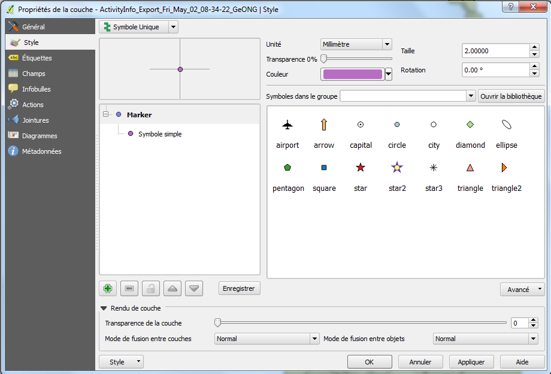

Maintenant que vous avez chargé vos données, vous pouvez ajouter une mise en forme pour que les données représentées dans votre carte soient plus utiles. Nous allons essayer deux ou trois options de mise en forme.
Remarque: La mise en forme est un chantier important que nous allons explorer uniquement en surface. Si nous avons le temps après à la fin des exercices ci-dessous, nous explorerons les autres options de mise en forme.
D’abord, allons chercher les données elles-même.
Ouvrir la table d’attributs dans la barre d’outils et cliquez dessus.Style – vous verrez apparaitre un écran comme ceci : La première chose à laquelle penser est la façon dont la mise en forme s’effectue – c’est un paramètre possible grâce au bouton situé en haut à gauche de la fenêtre de mise ne forme.
Les options sont les suivantes:
Symbole unique : affiche tous les points de la même façon (par exemple en marquant tous les campements par un cercle rouge).Catégorisé : affiche les points de façon différente en se basant sur la valeur d’un des champs (par exemple en affichant les campements avec un cercle de couleur différente en fonction de leur région).Gradué : affiche les points différemment en fonction de la classification (par exemple en affichant les campements selon la catégorie de population qui y est regroupée).Dans cet exercice, nous allons utiliser l’option Gradué, nous testerons également les autres plus tard.
Gradué dans le bouton situé en bas à gauche de la fenêtre de dialogue.Colonne, sélectionnez ‘Pop_1’ – c’est la colonne que nous utiliserons pour la mise en forme.Pallette de couleur pour représenter les données.Mode, sélectionnez Quantile.Classifier pour affecter les points de données aux bandes de valeurs de classification.OK.La mise en forme nécessite d’être vigilant sur la bonne interprétation des données par l’utilisateur – c’est tout l’art de la cartographie ! Dans la pratique, il faudrait essayer plusieurs options pour voir celles qui rendent le mieux – puis avoir des feedbacks d’utilisateurs (de vos voisins par exemple). Prenez quelques minutes pour essayer les différents styles.
Voici quelques options à essayer:
Avancé > Champ de proportion pour varier la taille du symbole en fonction de la valeur du champ (par exemple dans ‘Pop-1’). Si les symboles sont trop grands, régler les paramètres jusqu’à ce que le symbole s’ajuste à la bonne taille (la méthode dépend du type de mise en forme).Carte de chaleur dans le sélecteur de type de style en haut à gauche.Ouvrir la bibliothèque.